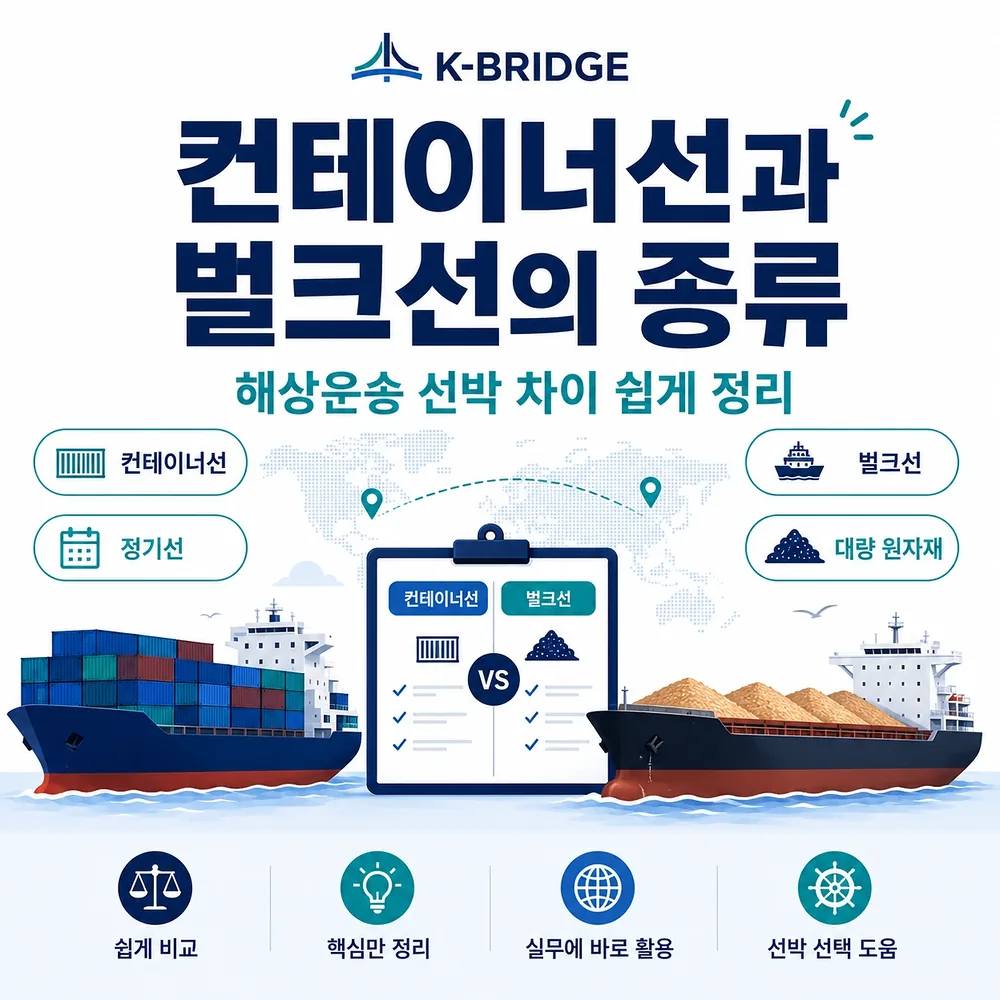
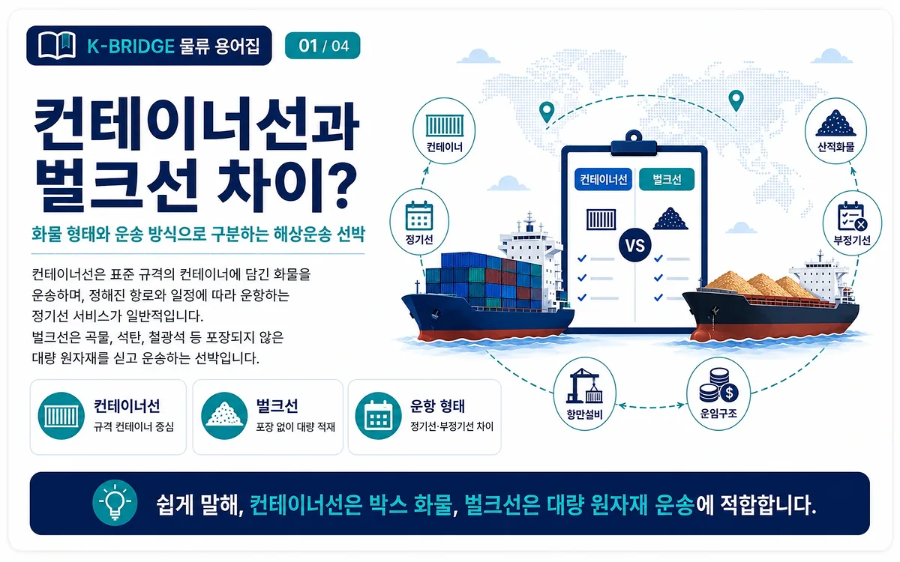
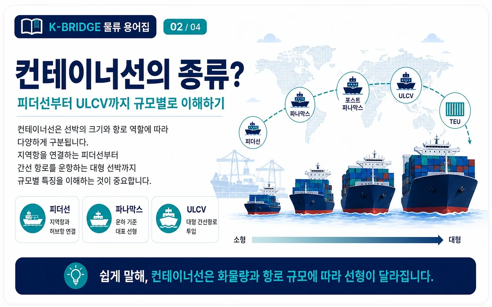
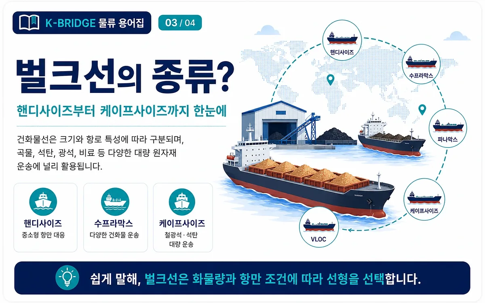
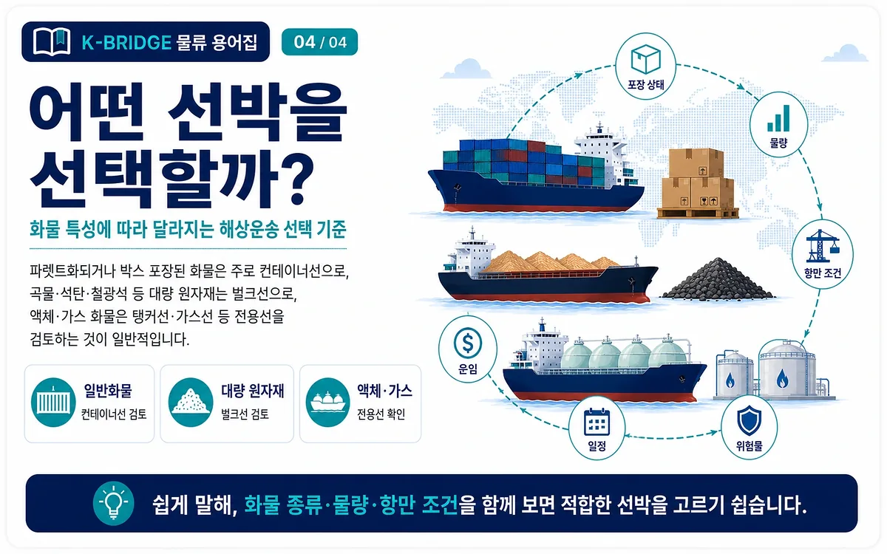

핵심 요약
컨테이너선은 박스·팔레트·기계류처럼 규격화해 적재할 수 있는 화물을 정기 항로로 운송하는 데 적합합니다. 벌크선은 곡물·석탄·철광석처럼 포장하지 않은 원자재를 선창에 직접 싣고 대량으로 운송할 때 사용합니다.

컨테이너선과 벌크선, 무엇이 다른가요?
두 선박의 가장 큰 차이는 화물을 싣는 단위입니다. 컨테이너선은 화물을 20FT·40FT 컨테이너에 넣어 적재하지만, 건화물 벌크선은 곡물이나 광석을 별도 포장 없이 선창에 직접 붓거나 퍼 올리는 방식으로 적재합니다.
규격화된 운송
다양한 화물을 컨테이너 단위로 분리해 운송합니다. 정기선 서비스가 많아 소량 화물도 LCL로 이용할 수 있습니다.
대량 원자재 운송
한 종류의 원자재를 대량으로 싣는 데 유리합니다. 화물의 성질과 항만 하역 설비가 선박 선택에 큰 영향을 줍니다.
| 구분 | 컨테이너선 | 건화물 벌크선 |
|---|---|---|
| 주요 화물 | 박스, 팔레트, 기계류, 소비재, 부품 | 곡물, 석탄, 철광석, 시멘트 원료, 비료 |
| 적재 단위 | 20FT·40FT 등 컨테이너 | 톤 단위 산적화물 |
| 선적 방식 | 크레인으로 컨테이너를 적재 | 컨베이어·그랩·호퍼 등으로 선창에 직접 적재 |
| 운항 형태 | 정해진 항로와 스케줄의 정기선 중심 | 화주 수요에 맞춘 부정기선·용선 운송 비중이 큼 |
| 운임 구조 | 컨테이너 수량, 노선, 각종 할증료 | 중량, 항로, 선박 시황, 용선 조건, 체선료 |
| 적합한 물량 | 소량 LCL부터 대량 FCL까지 | 동일 화물의 대량 운송 |
액체 벌크 화물인 원유·석유제품·화학물질·LNG·LPG는 일반 건화물 벌크선이 아니라 탱커나 가스운반선 등 별도의 전용선을 사용합니다.
컨테이너선의 종류
대부분의 현대 컨테이너선은 선창 안에 셀 가이드를 설치해 컨테이너를 층층이 고정하는 셀룰러 컨테이너선입니다. 실무에서는 선박의 적재 능력과 운항 범위에 따라 다음과 같이 구분합니다.

피더선 Feeder
대형 모선이 직접 들어가기 어려운 지역 항만과 허브항을 연결하는 소형·중형 컨테이너선입니다. 한국·중국·일본·동남아의 단거리 항로에서도 많이 사용됩니다.
파나막스 Panamax
기존 파나마운하 통항 제약을 기준으로 설계된 선박군입니다. 운하 폭과 수심, 항만 크레인 범위가 선박 크기를 결정하는 대표적인 사례입니다.
포스트 파나막스 Post-Panamax
기존 파나막스 규격보다 넓거나 큰 선박입니다. 더 많은 컨테이너를 실을 수 있지만 대형 크레인, 깊은 수심, 넓은 선석이 필요합니다.
ULCV Ultra Large Container Vessel
아시아-유럽 등 주요 간선항로에 투입되는 초대형 컨테이너선입니다. 한 번에 많은 화물을 운송해 규모의 경제를 확보하지만 기항 가능한 항만이 제한됩니다.
선박 규모는 보통 TEU로 표현합니다. 1TEU는 20FT 컨테이너 1개에 해당하며, 실제 선박 분류 범위는 선사와 자료에 따라 조금씩 달라질 수 있습니다.
벌크선의 종류
건화물 벌크선은 적재중량톤수와 항로 특성에 따라 구분됩니다. 선박이 커질수록 대량 운송에는 유리하지만 수심, 선석 길이, 하역 장비 등 항만 조건의 제약도 커집니다.

핸디사이즈 Handysize
비교적 작은 항만에 접근하기 쉽고 곡물, 비료, 철강재 등 다양한 화물을 운송합니다. 자체 크레인을 갖춘 선박도 많아 하역 설비가 부족한 항만에서 활용도가 높습니다.
수프라막스 Supramax
핸디사이즈보다 큰 중형 벌크선으로 자체 크레인과 그랩을 갖춘 경우가 많습니다. 곡물, 석탄, 시멘트, 비료 등 여러 건화물에 사용됩니다.
파나막스·캄사르막스 Panamax / Kamsarmax
곡물과 석탄 운송에 널리 사용되는 대형 벌크선입니다. 캄사르막스는 서아프리카 기니의 캄사르항 입항 조건을 고려해 발전한 규격입니다.
케이프사이즈 Capesize
파나마운하의 일반적인 통항 범위를 넘어 희망봉 또는 혼곶 주변 항로를 이용하던 데서 이름이 유래했습니다. 철광석과 석탄의 대량 장거리 운송에 주로 사용됩니다.
VLOC Very Large Ore Carrier
철광석을 초대량으로 운송하도록 설계된 전용선입니다. 대형 광산과 제철소를 연결하는 장거리 원자재 운송에 적합합니다.
액체 벌크 전용선
원유는 원유운반선, 정제유는 제품운반선, 화학제품은 케미컬 탱커, LNG와 LPG는 각각 전용 가스운반선을 이용합니다. 엄밀한 선종 분류에서는 이들을 일반 건화물 벌크선과 별도의 탱커·가스선으로 구분합니다.
화물에 따라 어떤 선박을 선택해야 하나요?
선박 선택은 단순히 화물 이름만으로 결정하지 않습니다. 포장 상태, 물량, 크기와 중량, 위험성, 출발·도착 항만의 하역 장비를 함께 검토해야 합니다.

| 화물 예시 | 주로 검토하는 선박 | 실무 포인트 |
|---|---|---|
| 박스·팔레트·부품 | 일반화물컨테이너선 | 소량은 LCL, 컨테이너 1대 이상은 FCL을 검토합니다. |
| 곡물·석탄·철광석 | 산적건화물 벌크선 | 대량 물량과 전용 하역 설비, 수분·오염 관리가 중요합니다. |
| 원유·화학·LNG·LPG | 액체탱커·가스선 | 화물별 탱크 재질, 온도·압력, 위험물 규정이 다릅니다. |
| 완성차·굴착기 | 차량Ro-Ro선 | 자력 주행 가능 여부와 차량 치수, 연료·배터리 조건을 확인합니다. |
| 플랜트·초대형 설비 | 중량물재래선·다목적선·중량물선 | 리프팅 포인트, 크레인 용량, 고박 설계, 항만 작업성을 검토합니다. |
해상운송 선박 선택 전 실무 체크포인트
- 물량이 컨테이너 단위인지, 벌크선 한 척 또는 선창 단위로 운송할 만큼 충분한지 확인합니다.
- 포장 상태가 박스·팔레트인지, 비포장 산적화물인지, 액체·가스인지 구분합니다.
- 항만 조건인 수심, 선석 길이, 크레인·컨베이어·저장탱크 보유 여부를 확인합니다.
- 일정이 정기선 스케줄에 맞는지, 선박을 별도로 배선해야 하는 부정기선 운송인지 검토합니다.
- 부대비용으로 터미널 비용, 하역비, 체선료, 보관료, 고박비가 발생할 수 있는지 확인합니다.
- 화물 특성인 위험물, 수분, 오염, 분진, 온도·압력 관리 조건을 사전에 전달합니다.
벌크선 운송은 선적·양하 시간인 Laytime과 지연 시 발생하는 Demurrage 조건이 비용에 큰 영향을 줄 수 있습니다. 계약 전에 작업 능력과 항만 혼잡도를 함께 확인해야 합니다.
자주 묻는 질문
Q. 팔레트 화물은 벌크선보다 컨테이너선이 맞나요?
Q. 기계 한 대도 벌크선으로 보낼 수 있나요?
Q. 컨테이너선 운임과 벌크선 운임은 왜 계산 방식이 다른가요?
Q. 벌크화물을 컨테이너로 운송할 수도 있나요?
화물에 맞는 해상운송 방식이 헷갈린다면 케이브릿지와 확인하세요
품명, 수량, 중량, 규격, 출발지와 도착지만 정리해도 컨테이너선·재래선·Ro-Ro선 등 적합한 운송 방식을 검토할 수 있습니다.